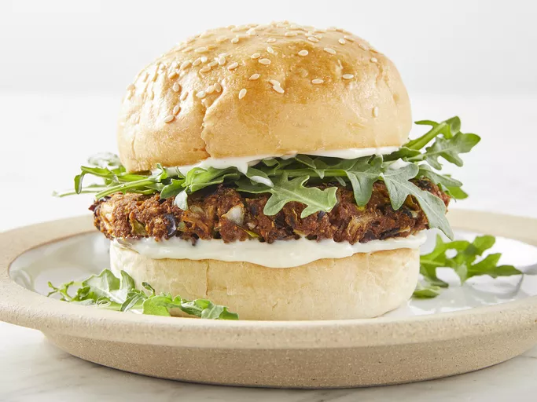

The veggie burger recipe

Here is the result !
With this black bean burger recipe, you will never want to eat frozen veggie burgers again!
These are a quick, easy, and flavorful vegetarian delight.
Ingredients Required :
- Vegetables
- Seasonings
- Egg
- Bread crumbs
How to make the Veggie Burger Step-By-Step :
- Mash the beans and chop the remaining vegetables and garlic in the food processor.
- Stir the veggies into the beans and combine the seasonings and egg in a separate bowl.
- MMix in the bread crumbs and divide the mixture into patties.
- Grill the patties for about 8 minutes on each side.